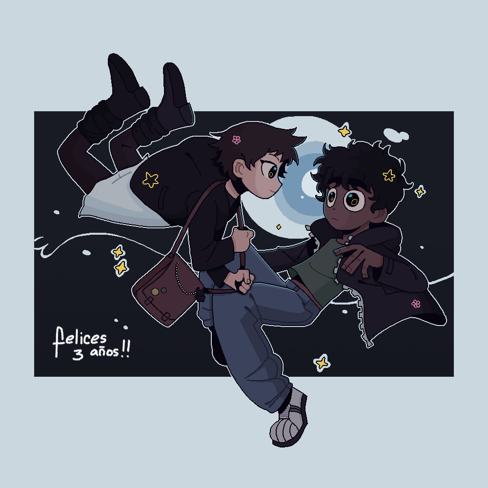

🌷 Al futuro programador:
Si alguna vez dudás de cuánto te amo entrá a esta página, y recordá que aprendí a programar un poco solo por vos. Quizá no sea la mejor, ni la más linda, pero la intención está (?).
No sé cómo explicar en palabras lo mucho que te aprecio y lo orgullosa que estoy de vos, y de nosotros como pareja. Pasamos de discutir siempre por cualquier pequeñez a tener una actitud más madura y sana ante el conflicto, nos manejamos mejor, pero nada de eso hubiese pasado sin tu interminable paciencia que tanto admiro. No me canso de decirlo, y es que realmente agradezco cada día que paso a tu lado sea corto o largo; si no estuvieses, siendo totalmente exagerada, no sé qué sería de mí. Quiero decir, me hacés sentir completa, como si no tuviese ningún otra preocupación en la vida mas que hacerte feliz, e impulsás a que quiera seguir mejorando cada vez más.
Espero seguir viviendo muchas más aventuras a tu lado, crecer y aprender juntos y, algún día, ser la familia que tando merecemos tener.
Te amo con todo mi corazón.
Si alguna vez dudás de cuánto te amo entrá a esta página, y recordá que aprendí a programar un poco solo por vos. Quizá no sea la mejor, ni la más linda, pero la intención está (?).
No sé cómo explicar en palabras lo mucho que te aprecio y lo orgullosa que estoy de vos, y de nosotros como pareja. Pasamos de discutir siempre por cualquier pequeñez a tener una actitud más madura y sana ante el conflicto, nos manejamos mejor, pero nada de eso hubiese pasado sin tu interminable paciencia que tanto admiro. No me canso de decirlo, y es que realmente agradezco cada día que paso a tu lado sea corto o largo; si no estuvieses, siendo totalmente exagerada, no sé qué sería de mí. Quiero decir, me hacés sentir completa, como si no tuviese ningún otra preocupación en la vida mas que hacerte feliz, e impulsás a que quiera seguir mejorando cada vez más.
Espero seguir viviendo muchas más aventuras a tu lado, crecer y aprender juntos y, algún día, ser la familia que tando merecemos tener.
Te amo con todo mi corazón.